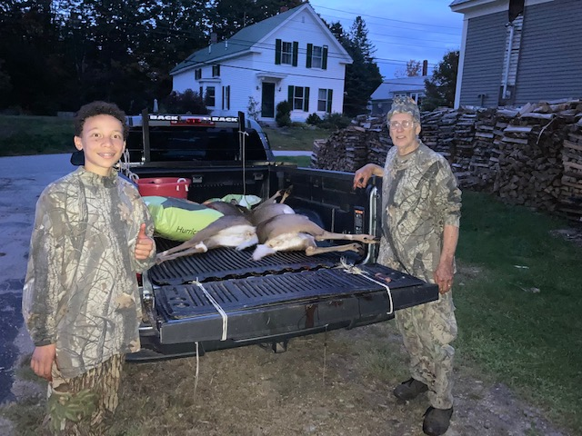
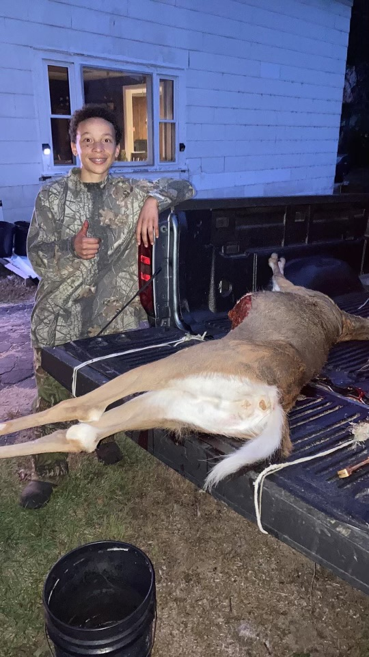
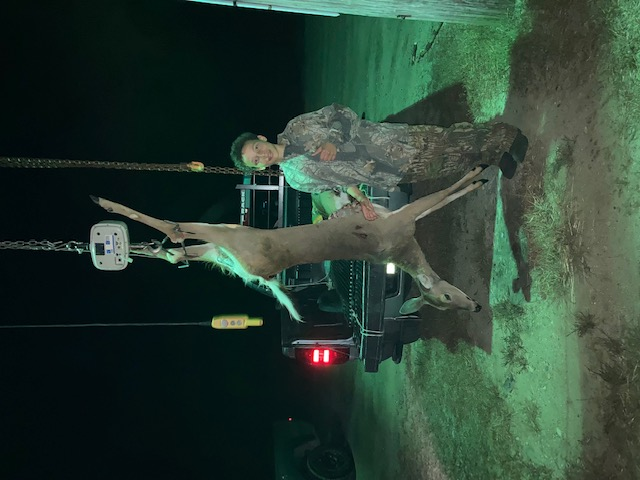

My name is Daniel and I will be turning thirteen soon. Becoming a teenage boy means you get to do fun activities like hunting. To be an effective and safe hunter, I must first learn the do's and don’ts of the craft.
I must first understand how to properly handle hunting equipment. A rifle and a crossbow will be my weapon of choice. Before I can get a rifle, I have to take a class on safety which is completed over the internet.
It took me about one week to finish the online safety course. Once the class was completed, I took a test and passed it on the first try. After passing the test with flying colors, grandfather and I visited the gun shop to pick
out a rifle. I was so excited to see all those guns on display. Some guns were cheap and some were very expensive. Finding the right fit for me was going to be harder than I thought. I wanted a 308-caliber rifle but grandfather
said that was too big for me and it was also very expensive. “A more appropriate size caliber for you will be a .22.” grandfather said. “A .22 is good for you to practice with” he added. We did not get a gun
the first day we went to the gun shop, or the second or third day . It took weeks before we finally decided on a rifle. Grandfather bought it off one of his friends. It was a used .22 rifle in good condition.
It takes both .22 long and short rounds. Hunting season was 8 months away so I had lots of time to practice shooting. Where I live people mostly hunt turkey, ducks, moose and deer; There is a hunting season for each one.
Even though you can hunt turkey and ducks with a .22 caliber rifle, it is not very practical to do so. A shotgun is best for bird hunting. It is nearly impossible to bring down a giant moose with a .22 caliber rifle.
However, I can use the .22 rifle to hunt squirrels and gophers. Deer will be our preferred quarry during hunting season. Before the hunting season opened, I practice shooting at the gun range every week. Grandfather was there to make sure I practice good safety habits;
I had to get it right or he was not going to take me hunting with him. So, I practiced diligently. After months of practice, hunting season was finally upon us. To legally hunt we need to buy a hunting permit from the Fish and Game authorities.
Practice with my .22 rifle
The permit comes in two categories, Guns and Bow and arrows. Bow season comes first so grandfather opted for a bow permit. Up to now I have been practicing with my rifle so it came as a surprise when grandfather chose Bow hunting.
My eyes lit up when grandfather turned to me and said “We will be getting you a crossbow, kid!”. It wasn’t long before the crossbow arrived and I immediately started practicing using it. The safety protocols of a crossbow are similar to
using a rifle, so there was not much more I needed to know. The first days of hunting was spent gathering intel on the deer. We drove around to different spots and observed the foraging habits of the intended prey.
We scouted different hunting locations for hunting advantages like cover, wind direction and a safe shooting angle. The last thing you want to do is to shoot in the direction of places nearby that may be occupied by people or farm animals.
Finally, the day came when I would get to take down a deer. I donned my hunting camouflage clothing and headed out to the woods with grandpa. We knew beforehand where the deer was going to be so we headed right to
the spot and waited quietly. After about 30 minutes I saw movement in the tree line. I whispered to grandpa “Over there.” It was a small deer, too small for us to take. Shortly after larger deer started to appear.
“Stay low.” Grandpa whispered. I laid on my stomach moving slowly and deliberately. I spotted my primary target; it was a doe: a female deer, about fifty yards away. Slowly working my way into position I armed the crossbow with a flathead arrow.
Aiming for the chest cavity just above the shoulder, the shot should rupture the heart or lung stopping the Animal in its tracks... easier said than done. I was nervous, my heart began to beat rapidly. Going through simple breathing exercises
helps to calm me down. The animal turned, setting up a clear shot at the heart. I hesitated for a split second. The window of opportunity for a clean shot began to diminish as the creature continued to move. An urgency took
control of me and I pulled the trigger. The arrow slipped through the air with hyper speed. Whack! The thump of the arrow meeting its target echoed through the forest. The Deer leaped from its standing position and ran off.” Did I miss?” I asked grandfather. “I Don’t know, let’s go check.”
As we came closer to the place where the deer stood, we could see blood and lots of it. Following the trail of blood, we found the deer laying in a bush, it was still alive. Grandfather turned to me and said,
“One more arrow should do the trick!” I knocked another flathead and took aim at the heart. From this distance I couldn’t miss and I didn’t. it was over, the deer laid still as the arrow sliced clear through to
the other side of the beast and pierced the earth beside it. It weighed about 150 lbs. After removing the innards, the weight dropped to 130 lbs. which made it a little bit easier to drag the carcass out of the forest and into the van.
I was overcomed with joy after my first successful hunt. I called my dad to tell him all about it. The next day, I help grandfather skin and cut up the deer meat; It smelled terrible but I didn’t mind. Most of the meat
was placed into a storage freezer and will be consumed throughout the winter month. We cooked some of the meat for lunch and dinner that day. The whole experience made me happy but there was one thing left to do.
We did not find the first arrow I used. Since each arrow cost a fair amount of money it was imperative, we return to the hunting spot to look for it. Eventually I found the arrow imbedded deep within a tree twenty feet
from where the deer was standing. “Wow, that crossbow is really powerful ” I said to grandfather. It took some effort to free the arrow from the tree. "very impressive."grandpa muttered. After retrieveing the arrow we returned home.
Grandfather is already planning another hunt and I can hardly wait!
The End
  